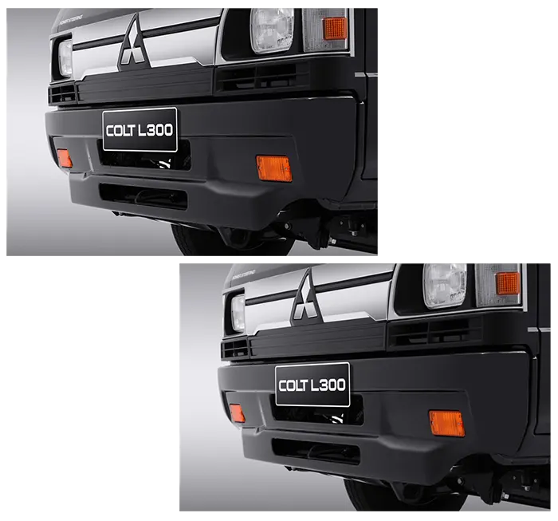
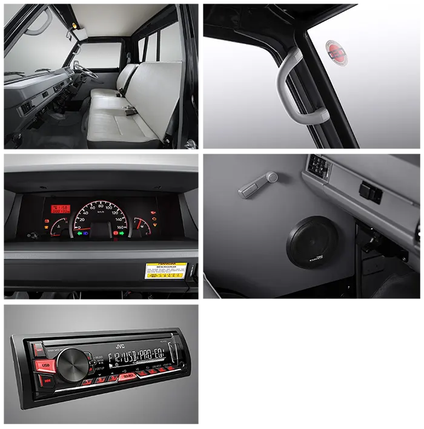
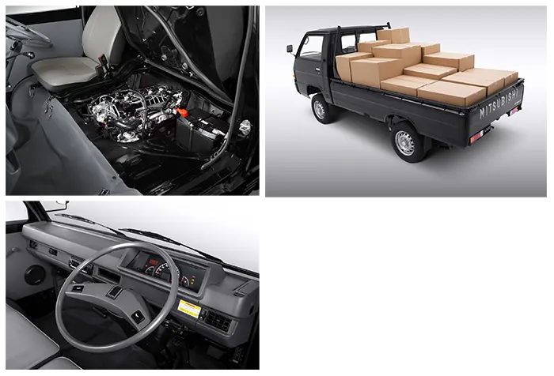

Sebagai legenda dari mobil niaga, leluhur dari semua mobil niaga berukuran sedang yang ada di Indonesia dan digunakan sampai sekarang, Colt L300 tetap menjaga kualitas mesin dan kekokohan sasis serta ukuran dimensi yang semakin besar sehingga mempermudah para pedagang untuk membawa barang dagangannya.
Mitsubishi L300 memiliki panjang 4.370 mm, lebar 1.700 mm, dan tinggi 1.945 mm. Selain itu, Mitsubishi merancang mobil pick up tersebut dengan jarak antar roda (Wheebase) berukuran 2.350 mm dan didukung ground clerance berjarak 195 mm dari atas tanah. Dimensinya memang cukup besar, namun mobil ini tetap nyaman saat dipakai melewati jalanan sempit ataupun medan lainnya.
Ground clerance setinggi 195 mm menjadikan Mitsubishi L300 mampu menerjang banjir atau hanya sekedar genangan air. Lalu untuk baknya memiliki ukuran panjang 2.4630 mm, lebar 1.600 mm, dan tinggi 1.380 mm. Bak tersebut tergolong sangat luas, sehingga bisa menampung berbagai macam barang dengan mudah. Di sisi lain, tersedia pula tangki bahan bakar berkapasitas 47 Liter yang membuatnya cocok dipakai berkendara keluar kota tanpa perlu takut kehabisan bahan bakar.
Pengaplikasian rem tromol sudah lebih dari cukup. Untuk mengoptimalkan sistem pengereman Mitsubishi L300 dalam menghentikan laju kendaraan. Kemudian soal fitur, mobil pick ini sudah dilengkapi Headunit yang mendukung CD dan MP3 untuk mengusur kebosanan saat berada didalam kabin. Sayangnya Mitsubishi tidak melengkapinya dengan AC dan semua instrument cluster mobil ini masih full analog, mulai dari indikator kecepatan, bahan bakar, suhu mesin, dll.


| Type Mobil | Harga |
|---|---|
| L300 CC 4X2 MT |
|
| L300 PU FB-R 4X2 MT |
|
1. Lebih Irit
2. Lebih Bertenaga
3. Must Lebih Banyak
4. Interior Lebih Nyaman
5.Lebih Mudah Cari Suku Cadang di Mana Saja
Lebih efisien, karena memiliki ruang kargo luas yang didukung oleh mesin bertenaga sehingga Anda dapat mengangkut muatan secara maksimal dan cepat sampai tujuan.
1. Desain Grille Baru. Dengan aksen chrome
2. Desain Bumper Baru
1. Kabin Luas dan Lega. Dengan jarak pandang yang lebih baik.
2. Assist Grip. Memudahkan keluar masuk kendaraan.
3. New Meter Cluster. Desai speedometer baru yang mudah dibaca.
4. Audio Head Unit.
5.Speaker pada Doortrim
1. Mesin Baru 4N14. Dengan sistem commonrail yang dilengkapi intercooler dan turbocharger memberikan torsi lebih besar dan bertenaga, serta menghasilkan gas buang berstandar EURO4
2. Kargo Lebih Panjang. Memiliki daya angkut 8% lebih banyak dibanding model sebelumnya.
3. Power Steering. Lebih ringan dan nyaman
Halo! Ada yang bisa kami bantu?
Chat Sekarang